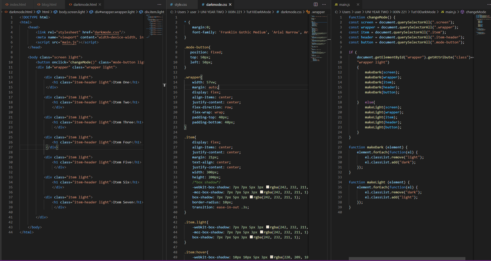
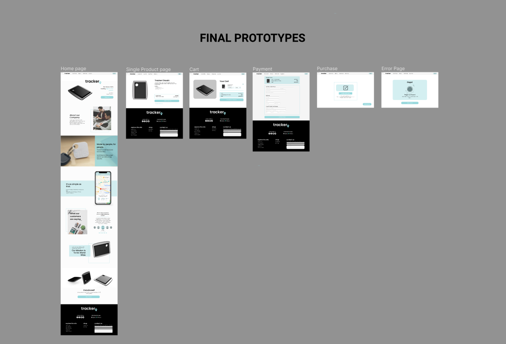

The Beginning


For the first week I worked on my blog, and looked at other websites that I thought might be both simple and interesting to use as a base for my blog website. I am really interested in monochromatic design, so I looked at portfolios and blogs that reflected this aesthetic, such as Tim Roussilhe, Ben Mingo, and Clement Grellier.
Tutorial Two

For this exercise I decided to use the developer tools to recreate Ben Mingo’s portfolio website. I also learned how to use CSS tricks like java to do small hover animations. I then started to develop my blog based on a wireframe I had created, which took heavy inspiration from Ben Mingo. I really liked the layout in particular of the website and thought that it would look excellent in a blog format with the image on the left and the text on the right, making it interesting with the date and week sections being abstract.
Tutorial Three
My Precedents as mentioned in the first week are Tim Roussilhe, Ben Mingo, and Clement Grellier’s websites. I personally like monochromatic, minimalistic design with pops of colour throughout in meaningful places. Both Tim and Ben’s portfolio designs are quite minimalistic. They both feature dates/numbers, and I like how there is a side bar that scrolls with you in both websites, which is where I will place the date/week/tutorial number. I also made a start on my wireframing for the blog part of the page!
Tutorial Four

I continued to code my blog and got to the point shown above. I found the overlaying text really hard to do as well as adding in CSS to get the lines to ‘load’ when the webpage is first visited or refreshed I used a section tag to group it all together so I could copy and paste my code but am having a few issues with the alignment if the following ‘copies’ of code, which I’ve been trying to debug for a while but can’t find a solution so will ask a tutor for help in the following session. Picture above is showing the copied code section.
Tutorial Five
This week I didn't work too much towards my blog, rather towards my wireframes for assignment one. For the first assignment I chose to do Calico Air as I thought it would be a more fun project to do than the Vic one. I think I'm really going to enjoy making two different pieces with different design choices, at this stage I'll go for one that's more modern and professional looking and one that is a little more traditional & classic.
Tutorial Six

Today I worked on my Figma wireframes of the blog section of the page and have a rough layout of what the home/about me page will look like. I haven’t yet started my mobile prototypes but I think they will definitely be more difficult to find precedents that look good for a blog website, so before next session I will have a look at precedents for blog and how to implement my design elements into a mobile format.
Tutorial Seven

Today I finished my two wireframe pages for the website wireframes and started to do my mobile wireframes. Before next week I would like to have the blog page done and ready to be able to be able to copy the sections so I can start inputting content and then be able to polish the page before moving onto the home page. This week I also finished off my wireframes and writing up my report for assignment one which was a really good learning experience, I really enjoyed this assignment!
Tutorial Eight
This tut i finished up my wireframes for this Blog project, but after continuing to code it the blog page is turning out to be a little tricky to get to align properly, so I think I'm going to change the layout of this page entirely; just leave it alone for now and move on to coding up the HomePage which I'm pretty excited about because I'm really happy with the layout of my wireframes. I am a little annoyed with the blog not working but it's a little bit more tricky to get some tutor help working from home so I'll just have to work around it and hope for a better outcome.
Tutorial Nine
This week I managed to do both my Desktop Prototype and my Mobile Prototype. My Wireframes we're pretty easy to convert into prototypes as i really just needed to fill in the gaps with images and information, as well as make a few overlays.
Tutorial Ten

This session was the java dark mode tutorial, where using JavaScript condition statements (If & Else), we could change the state of the page using one button. Because I did do a little bit of programming when I did computer science, I am a little bit familiar with condition statements, so this was a fairly easy tutorial for me, but I actually really enjoyed it! It taught me a lot of how condition statements in JS can be used to amplify a websites interactivity.
Tutorial Eleven
For tutorial eleven, we had to pitch the idea that we had come up with over the mid semester break. I presented my idea of doing a product showcasing website, where its simplified to be a whole website showing off a single product, instead of creating a whole website for multiple products to keep it within our given timeframe. Cooper also presented an idea of creating a charity website, but we were struggling to come with what charity we should do, and the others didn't present a design, so we ended up going with my Idea! My main inspiration for this idea was a website I liked, Tile (pictured above).
Tutorial Twelve

This Tutorial Jenny set up the Google Doc for us all to make user personas on, where we each did 2. I then put them into a presentable format Shown in the doc, along with the User flow diagram which I made. I also put together a Pinterest board to use as a moodboard when we come to wireframing and prototyping.
Tutorial Thirteen
For our blockframes, I worked by myself to produce both the 'Testimonials' and 'About Us' pages and the rest of my group worked together to do the rest of them. Once we had figured out what we did and didn't like, we made a start on the wireframes, working individually on two wireframes each, which we accidentally did over the top of the blockframes... I do have the photos of my own individual blockframes though, which are pictured above.
Tutorial Fourteen
Pictured are my wireframes, which are cropped, you can click this link to view my own blockframes, wireframes and prototypes for the testimonials and about us pages. these wireframes are what I worked on for this tutorial. After completing these I helped the rest of my team to complete their wireframes and get a better understanding of what I interpreted we were meant to do for this week's tutorial.
Tutorial Fifteen
I picked up where I left off with my wireframes and began to put together some prototypes for my 2 pages, using dummy photos of plants as they are abundant (they're all from Unsplash), and also makes it look thematic and official. I decided to go for an asymmetric style as I thought it would be interesting for the user to navigate, keeping it simple, but still interesting and professional. I also decided to include the repeating theme of a square outline around images as i think it leads the eye quite nicely and takes up a nice amount of space.
Tutorial Sixteen
While I was waiting for my group to catch up on their prototypes, I decided to make some Logos for our website because we would need them for our final product. I actually just made them in figma which worked our pretty nicely because you can export them as a PNG without a background. My personal favourites are the middle one and the top right one. I went with a trendy simple logo but made it personalised to our brand by adding in a location pin where the fullstop would be.
Tutorial Seventeen
My group began this tutorial by writing up the questions - 2 each - in our Google Doc, Which Gabriella then made into a Google Form to be used for our User testing. I did some user testing on my friend after I had completed the prototype for the website (pretty much entirely done my myself and Jenny, I made the whole layout of the prototypes so it would be consistent, also because the others didn't seem to really understand what a prototype was). I then got my friend to fill out the form which gave us some good feedback for improvement, he said that, because its a showcase, It might be better to have it all on one page rather than separate pages, and that it would give the page better flow.
Tutorial Eighteen
For this tutorial we were just looking at others work and presentations, which was really awesome to see, but also kind of disappointing to see that we weren't up to speed with everyone else. Our prototypes were really really bad, more like wire frames, Coopers were still blockframes at this stage, so before the next tutorial I managed to improve the overall look quite a bit to make it more of a prototype. Jenny and I also made the footer pictured above together.
Tutorial Nineteen

This week we we're completely roasted on our prototype so I made some major changes to it, as per Josh's and one of our testers suggestion, I put all the information into one page to try and really 'sell' you the product and the brand, so at the end of the page there would be a link for the user to have a better look at the product single and potentially purchase it, this would be on a separate page. I really had to condense the information and make it more relevant, which was another comment we had from users.
Tutorial Twenty, Twenty One, & Twenty Two.
We had some difficulty setting up the GitHub, but Gabby managed to do it with the help of Blaine, so she is now our git master!
Most of our group members, including myself, had assignments due this week, so we didn't really make any progress at all on our website.
We made a start on getting the error page done which we will use for links to different pages other than the home if we're pressed for time, with the text and the navbar and working out the JS for when you click on a link up the top, which will be a #href so that it will be a smooth scroll to the section on the single home page. We also got some new renders from Cooper, and I got some really good feedback on my blog!
Blog Reflection - Final Entry
For my blog, I have some differentiations from my original wireframes, and that is on the blog page. As mentioned, I had some issues with getting the alignment correct, for some reason it was messing up so I decided to just scrap it and start again with the blog you're reading now. I've actually come to like it even though it is a bit more simple, I think I've managed to make it fun by adding the fixed side bar that the dates scroll with, CSS animations and image sliders.
I've also made some changes to the colour. In my wireframes, I had used purple as a placeholder, because I knew I would want an accent colour. I ended up changing the colour to a light blue, but as per Blaine's suggestion surrounding legibility, I've made the accent blue darker, and for the buttons I have made them black instead of simply just a border so the blue can stand out more for those who have difficulty seeing.
Overall, I think that my style has really come through in this blog and I'm pretty happy with how it has turned out with very little prior knowledge of HTML, CSS and JS and I think it has been a really good and helping me to learn the basics of Web coding languages.
I have found this class to be really good and i hope they run a Web Design II next year as I would love to further enhance my Web Design Skills! Thank you Blaine and Josh!
Signing off, Sophia :)